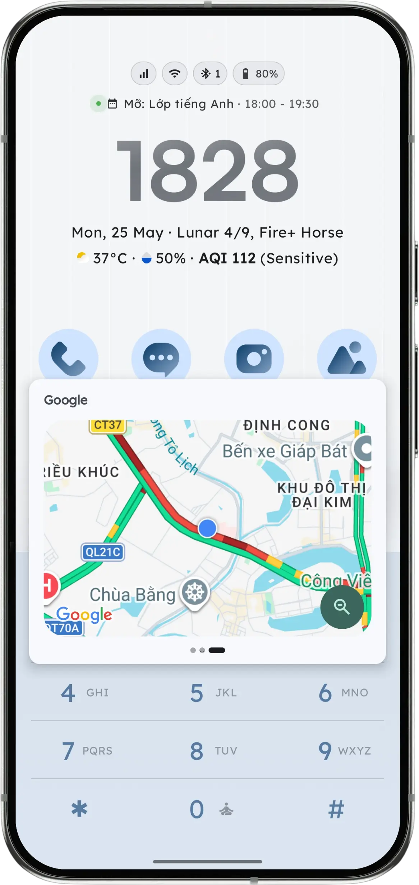
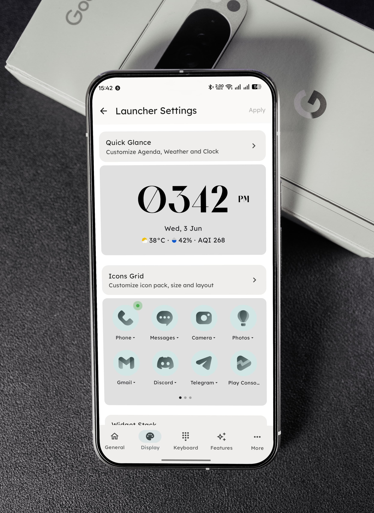
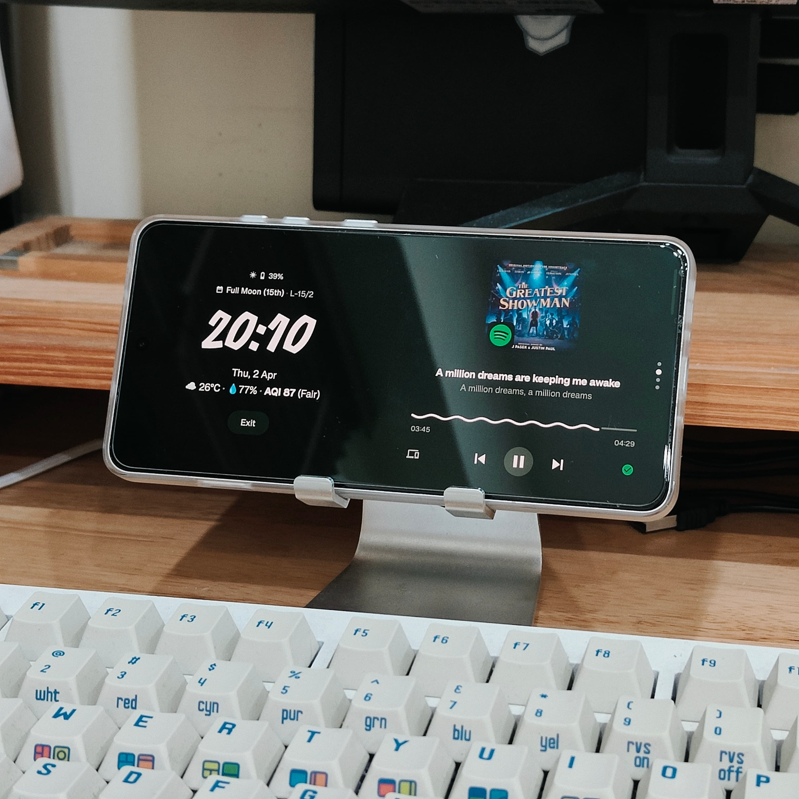

1. Nghịch Lý Của Dumbphone Phần Cứng: Tại Sao Mua Máy "Cục Gạch" Thường Thất Bại?
Nhiều người quyết định mua một chiếc điện thoại Nokia phím bấm hoặc Light Phone II với hy vọng chấm dứt chứng nghiện lướt màn hình vô thức. Tuy nhiên, sau 2 tuần, phần lớn phải quay lại với smartphone vì những bất tiện thực tế:
- Không có ứng dụng ngân hàng: Bạn không thể chuyển khoản VietQR, xác thực sinh trắc học khuôn mặt hay kiểm tra số dư.
- Không có bản đồ & gọi xe: Khi đi công tác hay lạc đường, việc không có Google Maps hay Grab/Be trở thành một thảm họa.
- Camera chất lượng kém: Không thể chụp lại tài liệu công việc hoặc lưu giữ khoảnh khắc gia đình.
Giải pháp thông minh hơn: Giữ lại phần cứng mạnh mẽ của smartphone Android (màn hình đẹp, camera tốt, chip xử lý nhanh), nhưng thay đổi hoàn toàn hệ điều hành giao diện và tâm lý tương tác thông qua phần mềm.
2. Bước 1: Cài Đặt Key Launcher Làm Giao Diện Mặc Định
Màn hình chính của Samsung One UI hay Xiaomi HyperOS được thiết kế bởi các chuyên gia tâm lý nhằm giữ chân bạn: icon ứng dụng màu sắc rực rỡ, chấm đỏ thông báo và các widget tin tức tự động cập nhật.
Khi cài đặt Key Launcher, bạn sẽ thay thế toàn bộ mớ hỗn độn này bằng một giao diện thanh tịnh:

3. Bước 2: Kích Hoạt Chế Độ Trắng Đen (Monochrome / Grayscale)
Màu sắc sặc sỡ của icon (màu đỏ của YouTube, màu hồng của Instagram, màu xanh của Facebook) là những "mồi câu dopamine" được lập trình sẵn. Não người nguyên thủy bị thu hút mạnh mẽ bởi màu sắc nổi bật vì nó gắn liền với quả chín hoặc mối nguy hiểm.
Khi bạn biến màn hình thành trắng đen, các video ngắn TikTok hay Reels bỗng trở nên nhàm chán và mất đi 80% sức hấp dẫn thị giác.

4. Bước 3: Đưa Ứng Dụng Dễ Gây Nghiện Vào Multiple Private Vaults
Quy tắc tâm lý học vàng: "Xa mặt cách lòng" (Out of sight, out of mind). Nếu bạn mở điện thoại và nhìn thấy icon TikTok ngay trước mắt, bạn sẽ bấm vào một cách vô thức.
Với Key Launcher, bạn hãy tạo một Kho riêng tư (Private Vault):
- Chuyển toàn bộ app mạng xã hội, game giải trí và sàn thương mại điện tử (Shopee, Lazada) vào Kho.
- Kho được khóa bằng mã PIN bảo vệ hoặc vân tay.
- Mỗi khi muốn mở Facebook, bạn phải chủ động dừng lại, nhập mật khẩu. Khoảng dừng "ma sát lành mạnh" này giúp não lý trí (Prefrontal Cortex) kịp can thiệp và ngăn chặn hành vi lướt màn hình vô thức.
5. Bước 4: Tận Dụng Super Focus Mode Khi Cần Làm Việc Sâu
Thay vì mua một chiếc đồng hồ Pomodoro đặt bàn riêng biệt, Key Launcher biến chính chiếc điện thoại của bạn thành một công cụ hỗ trợ năng suất:

Khi kích hoạt Super Focus Mode và xoay ngang điện thoại, màn hình sẽ hiển thị đồng hồ bàn làm việc tối giản (Flip Clock / Ambient Clock), tự động đếm ngược phiên làm việc 25 phút và ngắt các thông báo phiền nhiễu.
6. Tương Thích Hoàn Hảo Cho Thiết Bị E-Ink & Điện Thoại Nắp Gập
Nếu bạn đang sở hữu hoặc có ý định sử dụng các thiết bị phần cứng đặc thù của cộng đồng tối giản:
Máy E-Ink (Boox Palma, Hisense A9)
Màn hình mực điện tử E-Ink có tần số quét thấp, thường bị giật bóng mờ (ghosting) khi cuộn danh sách. Key Launcher sử dụng bàn phím T9 bấm số tĩnh 100%, không animation thừa, mang lại trải nghiệm mở app tức thì và siêu mượt trên E-Ink.
Máy Phím Bấm (Cat S22, Qin F21 Pro)
Key Launcher nhận diện trực tiếp các phím cứng vật lý 0-9 trên bàn phím phần cứng của Cat S22 hoặc Qin F21/F22, cho phép bạn bấm số thực tế để tìm và mở ứng dụng như một chiếc điện thoại cổ điển thực thụ.